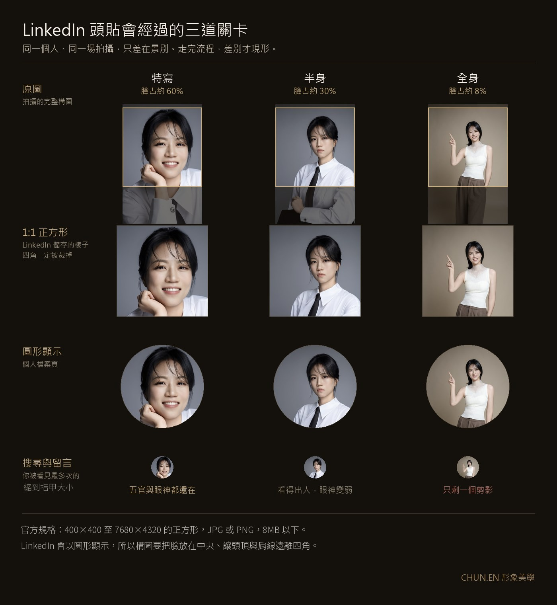

獵頭、客戶、未來的合作夥伴，在點進你的 LinkedIn 檔案之前，都先看過同一個東西：搜尋結果裡那顆小小的圓形頭貼。
而多數人的頭貼，是某次活動的裁切、多年前的生活照，或幾乎看不清臉的遠景。這顆小圓圈是你職場門面的第一關。它的顯示條件很苛刻，所以規則跟一般照片完全不同。規格能解決的是能不能被上傳，能不能被正確理解，靠的是拍之前的定位。
這篇整理 LinkedIn 的官方上傳規格、構圖原則與五個最常見的錯誤，五分鐘做完一次基本檢查。
LinkedIn 照片尺寸：先看官方規格
這幾個數字是 LinkedIn 明訂的上傳條件，決定的是「傳不傳得上去」：
- 圖片尺寸：400×400 至 7680×4320 px
- 檔案格式：JPG 或 PNG（不支援 GIF）
- 檔案大小：8MB 以下
- 背景橫幅建議尺寸：1584×396 px
但傳得上去只是及格。別人認不認得出你，看的是照片被縮小、裁成圓形之後還剩下什麼。下面這張表是 CHUN.EN 的拍攝與裁切建議，不是 LinkedIn 的規定。
拍攝與裁切建議
| 項目 | 建議規格 | 為什麼 |
|---|---|---|
| 上傳尺寸 | 正方形構圖，建議 800×800px 以上 | LinkedIn 以圓形顯示，先備好 1:1 才不會被裁掉髮型或肩線；解析度不足在高解析螢幕上會糊 |
| 臉部占比 | 臉＋頭髮約占畫面 55–65%（胸口以上） | 頭貼多數時候只以指甲大小的圓形出現，臉太小＝看不見你 |
| 視線與角度 | 眼神看鏡頭，身體可微側 15–30 度 | 視線接觸建立信任；微側比正面呆板少 |
| 背景 | 單純、與衣服有對比（淺灰/白/深色棚背景） | 小尺寸下雜背景會吃掉你的輪廓 |
| 光線 | 柔光、臉部均勻、無重陰影 | 陰影在小圖裡會變成「黑塊」 |
| 服裝 | 與你目標職位對齊的上半身正裝/知性便裝 | 頭貼只看得到領口，領口就是你的著裝 |
| 表情 | 保留自然的眼神交流，笑意的多寡依角色調整 | 要建立接近感就多一點笑意，要傳達決策份量就收斂一些，這是配比而不是二選一 |
值得記住的是，頭貼被看見最多次的場合不是你的個人檔案頁，而是搜尋結果、留言區與行動裝置上那顆很小的圓。介面尺寸會隨版本改動，但檢查方法一直有效：把照片縮到接近指甲大小，看眼神、臉部輪廓與髮型是不是還清楚。
把你的頭貼縮到指甲大小看一眼，那才是別人真正看到的你。

← 左右滑動看三種景別 →
五個最常見的錯誤
一、合照裁切。裁出來的角度、光線、解析度全是將就，而且常看得出旁邊有一隻被切掉的手臂。
二、太遠的全身照。縮成小圓後你只剩一個人形剪影，等於沒放照片。
三、過度濾鏡與磨皮。過度磨皮、濾鏡或動到五官比例，本人的辨識度會先掉一截。等到實際見面，照片和你之間的落差還會再扣一次信任。
四、背景訊息太多。房間、車內、餐廳不是絕對不能用，但環境資訊一多，背景就會比人先被看見。頭貼要挑的是低干擾、能把輪廓清楚分離出來的背景。
五、十年前的你。照片與本人差距太大，第一次視訊或見面就破功。什麼時候該換，〈形象照多久該更新一次〉有一套判斷訊號。
頭貼之外：LinkedIn 還有一個常被浪費的版位
背景橫幅（Banner），那條 1584×396 的橫幅，多數人放著預設的藍灰色。它其實是頭貼的放大機會：可以放你的工作情境照、品牌標語或專業領域關鍵字。頭貼負責「這個人可信」，橫幅負責「這個人是做什麼的」。兩個一起經營，檔案的完成度立刻高一個檔次。這正是「一組照片、多個版位」的部署思維，完整邏輯見〈一組照片的部署地圖〉。
橫幅的三個區域（左右滑動）
尺寸
1584 × 396（4:1）
上傳前
先裁成 4:1，避免被自動裁切
左下角
頭貼會蓋住
這一區
留白，別放重點文字或人臉
中央＋背景
你是做什麼的
放這些
一句標語＋專業關鍵字
工作情境照或品牌色
頭貼負責「可信」，橫幅負責「你是做什麼的」。
如果你正要為 LinkedIn 拍一張真正合格的頭貼，建議連同官網、簡報等其他場景一次拍齊，從商業影像與定位開始談，會比日後每個版位分開補拍划算。拍之前該準備什麼，〈拍形象照前的完整準備清單〉列得比較細；把整組視覺當成一件事來規劃，則是商業視覺整合企劃在做的。
轉職與高階經理人：被看見的時機，往往早於正式接觸
多數人以為頭貼是要找工作時才需要整理的東西。實際順序恰好相反：獵頭在你投遞履歷之前就在搜尋人選，口袋名單是平常就建好的。你決定轉職的那一天，別人往往早就看過你的檔案。
所以不必把更新頭貼跟求職綁在一起。比較穩的做法，是在職位、髮型、專業方向或定位出現明顯改變時，就把檔案例行整理一次。平常維持在合格狀態，機會來的時候不必臨時補件。
高階經理人的情境又不一樣。到了一定位階，機會多半不是應徵來的，而是被引薦、被查核來的。董事會、投資人、獵頭在見面之前一定先搜尋過你，LinkedIn 常常就在搜尋結果的第一頁。這時頭貼的任務已經不只是看起來專業，而是要和你的職級相稱：一張十年前的照片，或一張隨手裁的生活照，會讓做查核的人對「這個人是否在意細節」畫上問號。
人在台中的話，可以先看看三種服務的差別，再決定這張頭貼要交給誰拍。